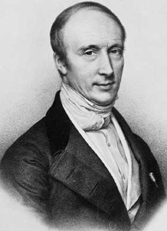
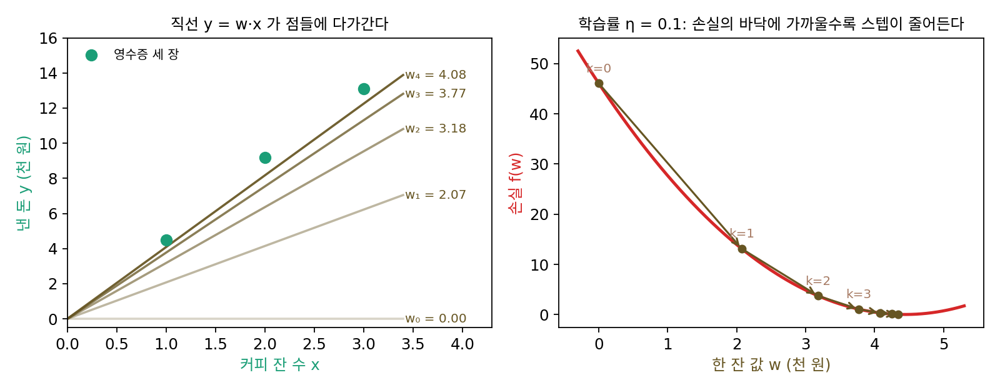
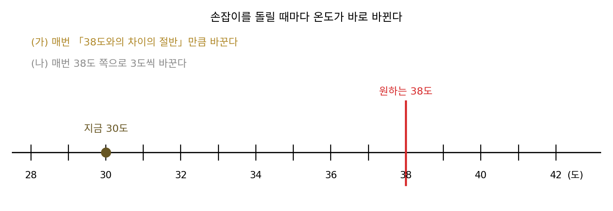
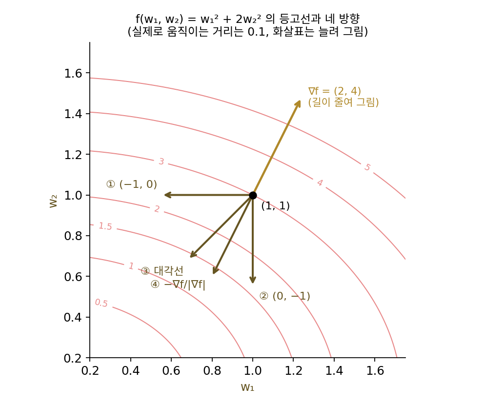
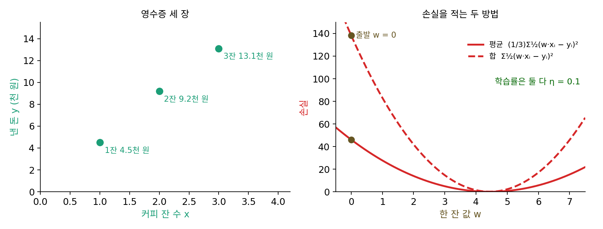

경사하강: 학습률은 어디까지 키울 수 있나
이 장의 물음
신경망을 처음 학습시킬 때 예제 코드에 적힌 학습률을 그대로 쓰다가, 학습이 느리다 싶어 값을 세 배로 올려 본 적이 있을 것이다. 손실이 더 빨리 내려간다. 신이 나서 다시 세 배를 올리면 이번에는 몇 스텝 만에 손실이 nan(계산할 수 없는 값)으로 바뀐다. 학습률을 키우면 조금씩 나빠지는 것이 아니라, 어느 값까지는 점점 좋아지다가 그 너머에서 갑자기 무너진다. 그 벼랑은 어디에 있고, 무엇이 벼랑의 위치를 정할까?
학습이 무너지지 않는 학습률을 골라도, 손실이 처음 몇백 스텝은 빠르게 줄다가 그 뒤로는 한참 동안 기어가듯 줄어드는 이상한 일은 남는다. 파라미터(학습으로 고치는 숫자들) 가운데 어떤 것은 금방 자리를 잡는데 어떤 것은 거의 움직이지 않는다. 같은 학습률로 모든 파라미터를 고치는데 왜 파라미터마다 자리를 잡는 데 걸리는 스텝 수가 이렇게 다를까?
그리고 순조롭던 손실 곡선이 어느 미니배치(한 스텝에 쓰는 데이터 묶음) 하나를 만난 뒤 갑자기 치솟는 일도 있다. 큰 언어 모델을 학습시키는 팀들도 이 일을 겪는다고 보고한다.
이 장은 다음 물음에 차례로 답한다.
- 손실의 그래디언트만 아는 채로 손실의 바닥을 찾아가는 규칙은 어떻게 적을까?
- 학습률을 어디까지 키워도 손실이 줄어든다고 장담할 수 있을까? 그 경계는 무엇이 정할까?
- 왜 어떤 방향은 금방 손실의 바닥에 닿고 어떤 방향은 한참 걸릴까? 스텝 수는 무엇에 비례할까?
- 한 번 튀어나온 터무니없이 큰 그래디언트가 학습 전체를 망치지 않게 하려면 어떻게 할까?
경사하강: 그래디언트 반대쪽으로 한 스텝씩
손실이 가장 작아지는 파라미터를 찾으려면, 학교에서 배운 대로 미분해서 0이 되는 곳을 풀면 될 것 같다. 파라미터가 하나뿐인 2차 함수라면 그렇게 한다. 그러나 신경망의 손실은 파라미터 수백만 개가 층을 거쳐 얽힌 함수라서, 「미분이 0」이라는 방정식을 식으로 풀어낼 길이 없다. 대신 지금 서 있는 자리에서 손실의 그래디언트(gradient, 함수가 가장 빨리 커지는 방향과 그 방향으로 커지는 비율을 모은 벡터)는 역전파로 값싸게 얻을 수 있다. 발밑의 그래디언트만 아는 채로 바닥을 찾아가야 한다면, 그 그래디언트를 어떻게 써야 할까? 그래디언트 반대쪽으로 가면 된다는 것까지는 짐작이 가지만, 얼마나 멀리 가야 할까?
역사: 코시가 행성의 궤도를 계산하다

그래디언트를 어떻게 써서 얼마나 가야 하는지에 처음 글로 답한 사람은 프랑스의 수학자 오귀스탱 루이 코시(Augustin-Louis Cauchy)다. 그는 1847년 10월 18일 파리 과학 아카데미 회보(Comptes rendus)에 세 쪽짜리 글 「연립방정식을 푸는 일반적 방법(Méthode générale pour la résolution des systèmes d’équations simultanées)」을 실었다. 계기는 천문학이었다. 행성이나 혜성의 궤도를 계산하려면 궤도를 정하는 여섯 개의 값을 미지수로 두고 관측과 맞는 방정식 여러 개를 함께 풀어야 했는데, 당시의 보통 방법은 미지수를 하나씩 지워 방정식 하나로 줄이는 것이었다. 코시는 이 방법의 두 가지 약점을 적었다. 많은 경우 지우는 일이 아예 되지 않고, 되더라도 남은 방정식이 처음 것보다 훨씬 복잡해진다는 것이다.
그가 낸 길은 방정식을 직접 푸는 대신 음수가 되지 않는 함수 u를 줄여 가는 것이었다. 방정식이 여럿이면 방정식마다 좌변과 우변의 차이를 제곱해 더한 것을 u로 삼으므로, u가 0이 되는 곳이 연립방정식의 해다. 지금 자리에서 u의 편미분 X, Y, Z, …를 구하고, 작은 양수 θ(세타)를 골라 각 변수를 −θX, −θY, −θZ, …만큼 옮기면 u는 대략 θ(X² + Y² + Z² + …)만큼 줄어든다. 이 옮기기를 되풀이하면 u는 점점 작아진다. 코시는 이 방법을 「원리만 적고 자세한 것은 다음 논문에서 다루겠다」고 했지만, 그 다음 논문은 나오지 않은 것으로 보인다(르마레샬, 2012). 같은 무렵인 1907년쯤에는 자크 아다마르(Jacques Hadamard)도 가장자리를 고정한 탄성 판의 평형 문제를 다루면서 비슷한 방법을 냈다고 전해진다.

방정식 여러 개를 함께 푸는 거면 지금은 numpy 한 줄이잖아요. 미지수가 여섯 개면 금방이고요.

np.linalg.solve가 푸는 건 1차 연립방정식이에요. 궤도 방정식은 미지수가 삼각함수 안에도 들어가 있어요. 코시가 적은 옛 방법의 약점이 뭐였죠?

미지수를 하나씩 지우는 일이 아예 안 되거나, 지우고 나면 남은 방정식이 더 복잡해진다는 거였어요. 음, 1차식이면 빼고 나누면 지워지는데, 사인 안에 든 미지수는 그렇게 안 빠지겠네요.

그래서 코시는 방정식을 푸는 대신 u를 줄이는 방법으로 돌아섰어요. 그럼 한 번 옮길 때마다 무엇을 새로 계산해야 하죠?

편미분 X, Y, Z, …요. 지금이면 loss.backward()가 알아서 채우는데, 그때는 여섯 개를 손으로 미분하고 숫자를 넣어 계산해야 했겠네요. 옮길 때마다요.
그 시절 천문 계산은 사람이 로그표를 넘겨 가며 손으로 했어요. 한 번 옮기는 값이 비싸니, 몇 번 만에 끝나는지가 큰일이었겠죠. 그런데 코시는 θ를 「작은 양수」라고만 했어요.

편미분과 작은 θ만으로 옮기기를 되풀이하면 정말 u가 0인 곳까지 가요? 답을 미리 아는 작은 문제로 확인해 볼 수 있을까요?
영수증 세 장으로 커피 한 잔 값 맞히기
규칙이 정말 바닥으로 데려가는지 보려면, 답을 미리 아는 가장 작은 문제에서 시작하는 것이 좋다. 파라미터가 하나뿐이고 손실이 2차 함수인 선형 회귀가 그렇다. 카페 영수증 세 장을 보면 커피 1잔에 4.5천 원, 2잔에 9.2천 원, 3잔에 13.1천 원을 냈다. 한 잔 값 w를 정하면 잔 수 x에서 낸 돈을 w·x로 예측할 수 있고, 예측이 실제 금액 y와 어긋난 정도를 제곱해 평균 낸 것의 절반을 손실 f(w)로 삼는다. 이 손실은 w에 대한 2차 함수라서 바닥이 w* = 4.4429에 있다는 것을 식으로 바로 알 수 있다. 그 답을 모르는 척하고, 그래디언트만으로 찾아가 보자.
w = 0(한 잔에 0원)에서 출발하면 손실은 46.08이고, 손실의 그래디언트 f′(0)은 −20.73이다. 그래디언트가 음수이니 w를 키우면 손실이 준다. 그래디언트에 0.1을 곱한 만큼 반대쪽으로 옮기면 w = 0 − 0.1 × (−20.73) = 2.073이다. 새 자리에서 그래디언트를 다시 재고, 그래디언트의 0.1배만큼 반대쪽으로 옮기기를 되풀이한다.
| 스텝 번호 k | 한 잔 값 wₖ | 손실 f(wₖ) | 그래디언트 f′(wₖ) | 다음 스텝 −0.1 × f′ |
|---|---|---|---|---|
| 0 | 0.0000 | 46.0833 | −20.7333 | 2.0733 |
| 1 | 2.0733 | 13.1265 | −11.0578 | 1.1058 |
| 2 | 3.1791 | 3.7522 | −5.8975 | 0.5897 |
| 3 | 3.7689 | 1.0857 | −3.1453 | 0.3145 |
| 4 | 4.0834 | 0.3272 | −1.6775 | 0.1678 |
| 5 | 4.2511 | 0.1115 | −0.8947 | 0.0895 |
| 10 | 4.4346 | 0.0259 | −0.0386 | 0.0039 |
스텝의 크기를 따로 줄여 준 적이 없는데도 스텝은 2.07, 1.11, 0.59, …로 저절로 줄어든다. 바닥에 가까워질수록 그래디언트가 작아지고, 스텝은 그래디언트에 비례하기 때문이다. 열 스텝이면 w는 4.4346으로 답 4.4429에 0.01 안쪽까지 다가가고, 열네 스텝째에 0.001 안쪽에 든다. 이 계산에 쓴 것은 지금 자리의 그래디언트와 0.1이라는 숫자 하나뿐이다.
이렇게 지금 자리에서 손실의 그래디언트를 재고, 그래디언트에 정해진 수를 곱한 만큼 반대쪽으로 옮기기를 되풀이하는 방법을 경사하강 (그래디언트 반대쪽으로 걷기 / gradient descent)이라 한다. 곱하는 수를 학습률이라 하고 η(에타)로 적는다. 파라미터가 여럿이면 그래디언트는 파라미터마다 편미분을 하나씩 모은 벡터 ∇f가 되고, 한 스텝은 다음과 같다.
코시가 적은 −θX, −θY, −θZ는 경사하강 식을 변수마다 하나씩 풀어 쓴 것이다. 그의 θ가 지금의 학습률 η다. 그래디언트는 손실이 가장 빨리 커지는 방향이므로, 그 반대쪽은 짧은 거리 안에서 손실이 가장 빨리 줄어드는 방향이다. 그래서 이 방법을 「가장 가파른 내리막(steepest descent)」이라고도 부른다.

ML에서: optimizer.step() 한 줄
파이토치에서 torch.optim.SGD(model.parameters(), lr=0.1)로 만든 옵티마이저의 step()은 모멘텀 같은 선택을 끄면 파라미터마다 경사하강 식을 그대로 계산한다. loss.backward()가 그래디언트 ∇f를 채우고, step()이 w ← w − η∇f를 한다. 영수증 문제와 다른 점은 파라미터가 수백만 개이고 바닥을 식으로 미리 알 수 없다는 것뿐이다. 그래서 이 장에서 보는 성질, 곧 스텝이 그래디언트에 비례하고 학습률 하나가 모든 파라미터의 스텝을 정한다는 성질이 그대로 신경망 학습의 성질이 된다. 이 책에서 뒤에 나오는 옵티마이저들도 모두 이 한 줄에서 「무엇이 모자라서」 고쳐 온 것이다.
문제 1. 샤워 물 온도 맞추기
샤워기의 물이 30도이고 원하는 온도는 38도다. 손잡이를 한 번 돌릴 때마다 물 온도가 바로 바뀐다고 하자. (가) 매번 「원하는 온도와의 차이의 절반만큼」 온도를 바꾸도록 손잡이를 돌리면, 여섯 번 돌린 뒤의 온도는? (나) 매번 원하는 온도 쪽으로 온도를 3도씩 바꾸면 어떻게 되는가? (다) 두 규칙 가운데 경사하강을 닮은 것은 어느 쪽이고, 왜 그런가?

(나)가 더 빠를 것 같아요. 3도씩 꼬박꼬박 올리니까 33, 36, 그리고 세 번째에 39도. 차이의 절반씩은 34, 36, 37, …이라 한참 걸리잖아요.
39도가 된 다음에는 손잡이를 어떻게 돌리죠?
38도보다 뜨거우니까 3도 내려서 36도… 그다음엔 다시 39도요. 36과 39 사이를 영영 오가네요. 38도에는 한 번도 못 닿아요.
(가)는 34, 36, 37, 37.5, 37.75, 37.875야. 38도를 넘지는 않으면서 계속 다가가. 차이가 8, 4, 2, 1, …로 반씩 줄어드니까.
둘의 차이는 어디에서 나왔을까요? 바꾸는 양이 무엇에 따라 정해졌는지 보세요.

(가)는 바꾸는 양이 남은 차이에 비례해요. 가까워질수록 저절로 조금씩 바꾸게 돼요. (나)는 남은 차이와 상관없이 늘 3도라서, 3도보다 가까워지면 넘어가 버리고요.
경사하강은 둘 가운데 어느 쪽을 닮았을까요?
스텝이 그래디언트에 비례하니까… 바닥에 가까울수록 그래디언트가 작아지면 (가)예요.
샤워에도 그래디언트가 있어?
불쾌함을 ½(온도 − 38)²로 잡으면 그 그래디언트가 (온도 − 38)이야. 남은 차이 그대로지.

과제 마감 직전에 남은 분량과 상관없이 매일 세 시간씩 하겠다고 정하면 마지막 날엔 할 게 없어서 엉뚱한 걸 손대는데, 그거랑 비슷하네요. 남은 분량에 맞춰 줄여야 마감에 맞춰 끝나요. 남은 분량이 바닥까지 남은 거리, 하루 공부 시간이 스텝이에요.
문제 2. 가장 가파른 방향은 정말 그래디언트 반대쪽인가
함수 f(w₁, w₂) = w₁² + 2w₂²의 점 (1, 1)에서 거리 0.1만큼만 움직일 수 있다. 네 방향 (−1, 0), (0, −1), 대각선 (−1, −1)/√2, 그래디언트 반대쪽 −∇f/|∇f| 가운데 f가 가장 많이 줄어드는 것은 어느 쪽인가? 1차 근사(∇f와 움직인 벡터의 내적)로 한 번, 실제 값으로 한 번 비교하라.

그래디언트는 (2, 4)예요. 둘째 칸이 더 크니까 w₂만 줄이는 (0, −1)이 제일 좋을 것 같은데요. 실제로 계산하면 3에서 0.38만큼 줄어요.
대각선도 해 봐. (0.9293, 0.9293)이면 0.4093만큼 줄어. 이미 (0, −1)보다 많아.
1차 근사로 보면 방향 d로 0.1만큼 갈 때 줄어드는 양은 얼마죠?
−0.1 × (∇f·d)예요. 그럼 내적 ∇f·d가 가장 작은 d를 찾으면 되는데… 길이가 1이면 내적은 두 벡터 사이 각도로만 정해지니까, d가 ∇f와 정반대일 때 가장 작아요.
그때 줄어드는 양은요?
0.1 × |∇f| = 0.4472예요. (0, −1)은 0.4, 대각선은 0.4243이니까 그래디언트 반대쪽이 1등이에요.
실제 값으로도 −∇f/|∇f| 쪽이 0.4292로 제일 많이 줄어요. 큰 칸만 보면 안 되고 두 칸을 그 비율대로 섞어야 하는 거네요.

그런데 이상해. 방향을 0.1도 간격으로 다 돌려 보니 실제로 제일 많이 줄어드는 방향은 (−0.4633, −0.8862)이고, 그래디언트 반대쪽 (−0.4472, −0.8944)와 조금 달라. 줄어드는 양도 0.4293으로 아주 조금 더 커.

좋은 데를 봤어요. 그래디언트는 그 점 하나에서 잰 것이에요. 0.1만큼 가는 동안 함수가 휘어 있으면 그 사이에 그래디언트가 바뀌겠죠?

그래서 1차 근사에서는 그래디언트 반대쪽이 1등이고, 실제로 유한한 거리를 가면 휨 때문에 조금 어긋나는 거군요.
그럼 0.1 말고 더 짧게 가면 어긋남도 줄어?
그렇겠지. 거리를 0으로 줄이면 두 방향이 같아지고. 「가장 가파른」은 아주 짧은 스텝에 대한 말이네. 해석학에서 방향 미분을 극한으로 정의했던 게 이래서였어.
문제 3. 손실을 평균 대신 합으로 쓰면
영수증 세 장의 손실을 평균 대신 합 Σ½(wxᵢ − yᵢ)²로 바꾸고, 학습률은 그대로 η = 0.1로 둔다. (가) w = 0에서 첫 스텝 뒤 w는 얼마인가? (나) 평균 손실로 학습할 때와 똑같은 스텝을 하려면 학습률을 얼마로 바꿔야 하는가? (다) 영수증이 64장이면?

합이나 평균이나 바닥 위치는 같잖아요. 손실 숫자만 세 배가 되는 거니까 학습은 똑같겠죠.
바닥 위치는 같아요. 그럼 스텝은요? 첫 스텝을 직접 계산해 봐요.
합으로 하면 그래디언트가 −62.2예요. 평균일 때 −20.73의 세 배요. 첫 스텝이 6.22라서, 답 4.44를 지나쳐 버렸어요. 그다음은 3.732, 4.7272, 4.3291 … 넘었다 모자랐다 하면서 다가가네요.
스텝이 그래디언트에 비례하니까, 손실을 세 배 하면 스텝도 세 배야. 같은 스텝을 하려면 학습률을 1/3로, 0.0333으로 줄여야 해. 그러면 2.0733, 3.1791, 3.7689, …로 평균일 때와 숫자까지 같아져.
영수증이 64장으로 늘었는데 학습률은 0.1로 둔 채 합 손실을 쓰면, 첫 스텝의 그래디언트는 평균 손실일 때의 몇 배가 될까요?
64장의 합이면 그래디언트가 평균의 64배니까 학습률을 1/64로 줄여야 같은 스텝이에요. 학습률이라는 숫자는 혼자서는 뜻이 없고, 손실을 합으로 적었는지 평균으로 적었는지와 함께 봐야 뜻이 있네요.

파이토치 손실 함수에 reduction='sum'이랑 'mean'이 있던 게 그거였구나. 남의 코드에서 학습률만 베껴 오면 안 되는 이유가 하나 늘었어요. 조교님이 채점 기준을 100점 만점에서 10점 만점으로 바꿨는데, 감점은 예전처럼 5점씩 하면 다들 마이너스가 되잖아요. 만점이 손실의 크기, 감점 5점이 학습률이에요.